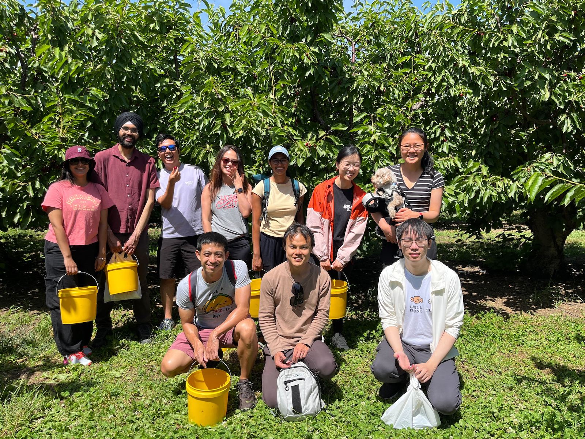
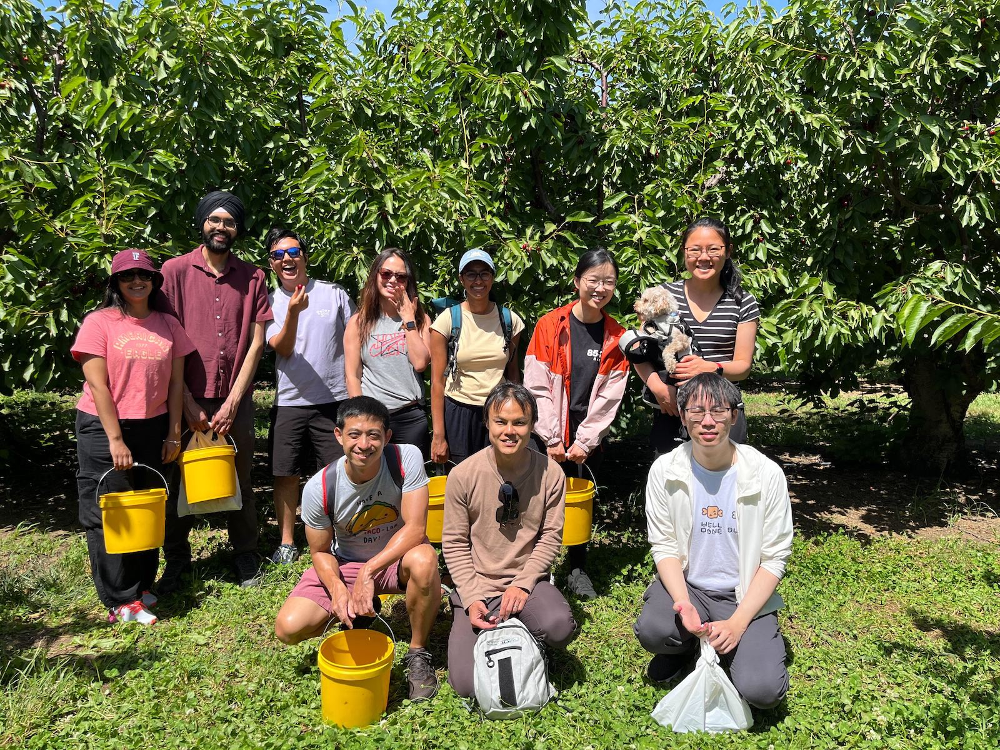

Avni Kothari
Data scientist, member of Zuckerberg San Francisco General Hospital Predictive Analytics Team
Website
Research interests: Trustworthy machine learning, algorithmic fairness, algorithmic recourse
Personal interests: Biking, hiking, gardening, and knitting
 
